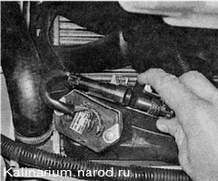
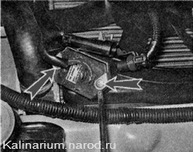
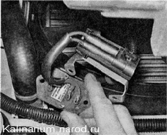
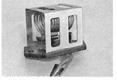

Дополнительный резистор электровентилятора проверка и заменаДля выполнения работы потребуется мультиметр. Работу удобнее выполнять на смотровой канаве или эстакаде. Снятие и проверка 1. Подготавливаем автомобиль к выполнению работы. 2. Снимаем брызговик двигателя и защиту картера (если установлена). 3. Освободив фиксатор, разъединяем колодку жгута проводов дополнительного резистора электровентилятора.  4. Крестовой отверткой отворачиваем два винта крепления дополнительного резистора.  5. Отводим кронштейн с колодкой в сторону и снимаем резистор.

6. Визуально убеждаемся в целости спирали, отсутствии обугливания и других повреждений. 
7. Омметром проверяем добавочный резистор на обрыв спирали. При обнаружении неисправности заменяем резистор. Установка Устанавливаем дополнительный резистор в последовательности, обратной снятию. |